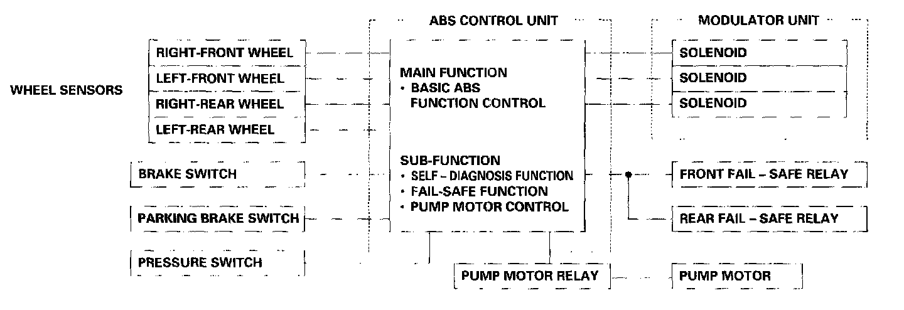
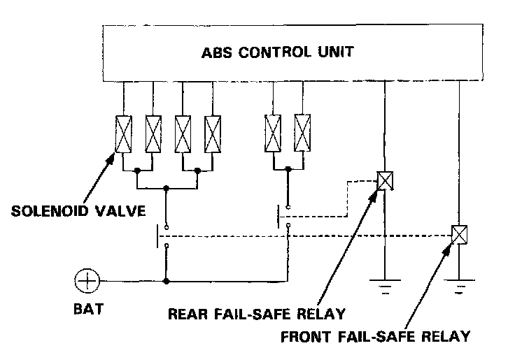

Electronic Brake Control Module: Description and Operation

Features/Construction
ABS control unit
The ABS control unit consists of a main function, which controls the operation of the anti-lock brake system, and sub-function, which controls the pump motor and "self-diagnosis".
For safety, the main function consists of two systems, and the ABS control unit activates the solenoid valve only when the outputs of the two systems agree with each other.
- The main function section of the ABS control unit performs calculations on the basis of the signals from each wheel sensor, and controls the operation of the anti-lock brake system by activating the solenoid valves in the modulator unit for each front brake and for the two rear brakes. The ABS has individual control of the front wheels and common control ("Select low") for the rear wheels. "Select low" means that he rear wheel that would lock first (the one with the lowest resistance to lock-up) determines the ABS activation for both rear wheels.
- The sub-function section has the fail-safe function that monitors the system operation by inputting the brake switch, parking brake switch and pressure switch signals, and stops the anti-lock brake system when it detects an abnormality in the system. It also has a self-diagnosis function and the pump motor control function.
Pump motor control
The ABS control unit monitors the brake fluid pressure in the accumulator by the pressure switch ON/OFF signals~ The
ABS control unit turns the pump on when the pressure in the accumulator drops, and stops the pump when the pressure rises to the specified value.
If the pressure does not reach the specified value after the motor has operated continuously for a specified period, the ABS control unit stops the motor and activates the ABS indicator light.
Self-diagnosis function
The self-diagnosis function, provided in the sub-function of the ABS control unit, monitors the main system functions by constantly transmitting the data between the two Central Processing Units (CPUs). When an abnormality is detected, the ABS control unit turns the ABS indicator light on and stops the ABS, although the basic brake system continues to operate normally.
When the ABS control unit detects an abnormality with the ABS and turns the ABS indicator light on, the diagnostic trouble code (DTC), which shows the problem part or unit, is recorded in the control unit. The DTC can be read by the blinking frequency of the ABS indicator light.

Fail-safe function
When an abnormality is detected in the ABS control system self-diagnosis, the solenoid operations are suspended by turning off the two fail-safe relays. This disconnects the ground circuits of all the solenoid valves to prevent ABS operation. Under these conditions, the braking system functions just as an ordinary one.
Fail-safe relay
The fail-safe relay's terminal side contact is normally open. When there is continuity at the relay coil, the fail-safe relay is closed, thereby connecting the ground circuit to the solenoid valve.
ABS indicator light
The ABS control unit turns the ABS indicator light on when one or more of the following abnormalities are detected. This is only a partial list.
- When the operating time of the motor in the power unit exceeds the specified period.
- When vehicle running time exceeds 30 seconds without releasing the parking brake.
- When absence of speed signals from any of the four wheel sensor is detected.
- When the activation time of all solenoids exceeds a given time, or an open circuit is detected in the solenoid system.
- When solenoid output is not detected in the simulated ABS operation when the engine is started or the vehicle is driven.
To check the indicator light bulb, the light is activated when the ignition switch is first turned on. The light goes off after the engine is started if there is no abnormality in the system.